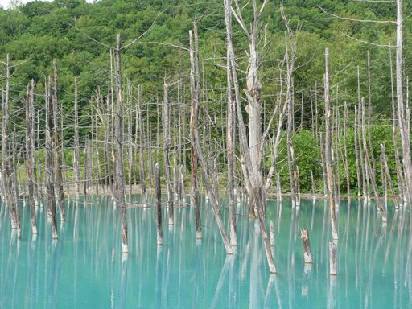
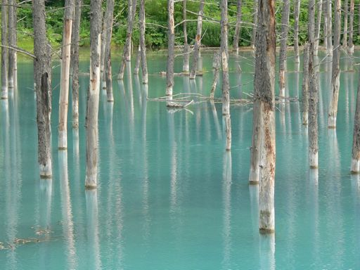

見知らぬ街にて
青い池
家族で富良野・美瑛を旅行したとき，かんのファームの売店で売られていたカレンダーの表紙にこの池が写っていました。
今まで見たことがない不思議な色に思わず見とれてしまいました。
そのカレンダーを購入しながら売店の人に，何処の湖なのか聞いてみると，湖ではなくて池だといいます。
名前は「青い池」というそうで，ここからだと車で20分位，白金温泉を目指して行けばすぐに分かるとのことでした。
今回の旅行では全く予定していなかったのですが，その池まで行ってみることにしました。
「青い池」を目指しつつも，中学・高校を北海道で過ごした私としては，
こんな色の池(湖？)が北海道にあることを全く聞いたことがなかったので，
ちょっと狐に包まれたような気分でした。
しかし... 20分ほど車を進めると，売店で教えられたとおり，「青い池」はありました。
地図を表示
青い池

確かにカレンダーの表紙で見たとおりの色です。藻などの有機系の色ではなく，
水そのものが青味を帯びているように見えます。
青いといっても真っ青な空を連想させる青さではなく，柔らかな青空の色という感じでしょうか。


立ち枯れた木々の部分を撮った画像です。
水の透明度は高くないようです。濁っている訳ではなく，
水彩絵の具を溶かしたような感じです。
この池が独特な雰囲気を醸し出しているのは，青い色だけではなく，
池に佇む立ち枯れた木々にもありそうです。


池に沿って奥へ進んでいくと，川が現れたのですが，
驚いたことに，川の水も池と同じように青い色をしていました。